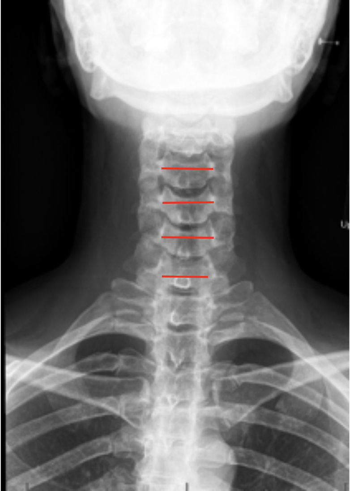

1) Description of Measurement
The Interpedicular Distance (IPD) is a radiographic measurement used to assess the transverse (mediolateral) width of the spinal canal at a given vertebral level. It represents the horizontal distance between the medial borders of the pedicles on an anteroposterior (AP) cervical spine X-ray.
This measurement is important for evaluating congenital, traumatic, or acquired narrowing of the spinal canal and is especially useful in detecting developmental cervical stenosis, fractures involving pedicles, or lateral mass displacement after trauma.
2) Instructions to Measure
3) Normal vs. Pathologic Ranges
4) Important References
Hinck VC, Sachdev NS. Developmental stenosis of the cervical spinal canal. Brain. 1966 Mar;89(1):27-36. doi: 10.1093/brain/89.1.27.
Pavlov H, Torg JS, Robie B, Jahre C. Cervical spinal stenosis: determination with vertebral body ratio method. Radiology. 1987 Sep;164(3):771-5. doi: 10.1148/radiology.164.3.3615879.
Qudsieh H, Al-Rawashdeh I, Daradkeh A, et al. Variation of Torg-Pavlov ratio with age, gender, vertebral level, dural sac area, and ethnicity in lumbar magnetic resonance imaging. J Clin Imaging Sci. 2022 Sep 1;12:53. doi: 10.25259/JCIS_67_2022.
Ellingson BM, Salamon N, Woodworth DC, et al. Reproducibility, temporal stability, and functional correlation of diffusion MR measurements within the spinal cord in patients with asymptomatic cervical stenosis or cervical myelopathy. J Neurosurg Spine. 2018 May;28(5):472-480. doi: 10.3171/2017.7.SPINE176. Epub 2018 Feb 9.
5) Other info....
Interpedicular Distance directly reflects bony canal width and can indicate potential compression of the spinal cord or nerve roots when reduced.
However, radiographic magnification and patient rotation can alter measurements; therefore, CT or MRI provides more accurate canal morphology.
The Pavlov/Torg Ratio (sagittal canal/body ratio) is often used alongside IPD to provide a normalized measure that accounts for vertebral body size.
Decreased IPD may result from:
Dynamic AP views are rarely used but can demonstrate motion-related narrowing if instability exists.